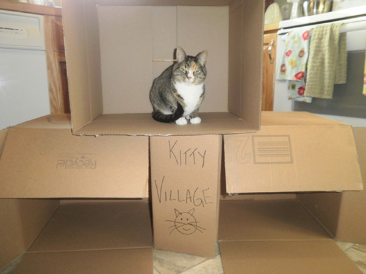

To follow along on your laptop, visit http://bit.ly/2Fkah4y
Intro to Coding
with Ruby
Brought to you by Johnson Women in Tech (#JWiT2018)
Presented by Lauren Woodrick & Austin Piëch
(@LoremIpsam & @chiefpiech)
The Instructors
Lauren Woodrick is a designer/front-end web developer at Gaslight, a software consultancy based in Cincinnati, Ohio.
Austin Piëch is a student at Johnson (’18) who knows his way around a command line, coding in Python and dabbling in Ruby.
Both of us have worked with the organization Girl Develop It!, whose mission is to provide avenues and support for adult women learning looking to break into programming.
Why Learn to Code?
- Become better able to communicate with developer colleagues
- Make it possible to bootstrap your own web app prototypes
- Improve your general technical sophistication
- Because learning is fun!
What We'll Be Covering:
- The History of Programming
- How Computers Think
- Why Ruby?
- Variables
- Methods
- Logical Structures
- Loops
- Let's Code in Ruby!
- What Should I Do Next?
Computation:
The Early Years
Computation: The Early Years
Examples of some early analog calculators.
Computation: The Early Years

A difference engine built out.
Computation: The Early Years
Our Lady of Conceptual Programming, Ada Lovelace
Computation: The Early Years

Programmers working with the Colossus, a Nazi code-breakin'
machine and one of the first digital computers.
The Evolution of Programming Languages
- First Generation: Machine Code
- Second Generation (1949): Assembly Code
- Third Generation (Late 1950s): High-Level Language
- Fourth Generation (1980s): Even Higher-Level Language
First Generation
011010000110010101101100011011000110111100100000011101110110111101110"Hello World" in binary.
Second Generation
section .text
global _start ;must be declared for linker (ld)
_start: ;tell linker entry point
mov edx,len ;message length
mov ecx,msg ;message to write
mov ebx,1 ;file descriptor (stdout)
mov eax,4 ;system call number (sys_write)
int 0x80 ;call kernel
mov eax,1 ;system call number (sys_exit)
int 0x80 ;call kernel
section .data
msg db 'Hello, world!',0xa ;our dear string
len equ $ - msg ;length of our dear string
"Hello World" in Assembly.

Our Lady of Code Compilation, Grace Hopper
Third Generation
IDENTIFICATION DIVISION.
PROGRAM-ID. HELLOWORLD.
PROCEDURE DIVISION.
MAIN.
DISPLAY 'Hello, world.'.
STOP RUN."Hello World" in COBOL.
Third Generation
Examples:
- COBOL
- FORTRAN
- BASIC
- C
Fourth Generation
puts 'Hello, world!'"Hello World" in Ruby.
How We Talk To Computers:
The Fourth Generation
Examples:
- JavaScript
- Python
- Ruby
- MySQL + PostgresSQL
How Do Computers Do Their Thinking?
How Computers Think
Computers have three types of memory — Read-Only Memory, Hard Drive Memory, and Random Access Memory.
How Computers Think: ROM
ROM, or Read-Only Memory, is hardwritten into chips and handles data essential to a computer's operation.
How Computers Think: ROM
Read-Only Memory functions similarly to the brainstem. (I'm sorry...)
(I'm sorry...)
How Computers Think:
Hard Drive Memory
Hard Drive Memory is editable memory that holds files and programs that you create and install.
How Computers Think:
Hard Drive Memory
How Computers Think: RAM
RAM, or Random Access Memory is volatile memory that handles data that the computer is actively using.
How Computers Think: RAM
RAM is like our working memory.
How Computers Think: A Review
- ROM handles data that's essential for device operation
- Hard Drive handles hardwritten, saved data.
- RAM handles data your computer is using.
Why Ruby?
Why Ruby?
- Ruby was written with the humans writing it in mind.
I want to see Ruby help
every programmer in the world
to be productive, and to enjoy programming, and to be happy.
— Yukihiro "Matz" Matsumoto
Why Ruby?
- Ruby was written with the humans writing it in mind.
- Ruby is a friendly language surrounded with a friendly community.
It wasn’t until I discovered programming at a high level of abstraction, the kind suited for making business and information systems, that I started to realize programming, perhaps, was something for me after all.
— David Heinemeyer Hansson, Creator of Ruby on Rails
Why Ruby?
- Ruby (born in the mid-90’s) and Rails (born in 2005) both have a lot of mileage on them, so any
problems you run into will have an easily-recoverable answer on Google.
- Your first homework assignment is to visit Stack Overflow. Think of it as an encyclopedia of problems, and there’s almost always a solution or two… or three…
Let's Ruby!
Let's Meet the Terminal!
The terminal is a space where we run chunks of code and test them to make sure that it's behaving in the way we want it to.
For this course, we'll be making use of an online terminal named repl.it.
As you get more into programming, you can use your computer’s own terminal and a program like Atom and NotePad++ to build and run full programs. But for now, repl.it is a great playground to start in.
Let's Ruby
We'll be covering Variables, Methods, Conditionals, and Loops!
Let's Ruby: Snackbot
As we pick up concepts, we'll be using them to create a program to run Snackbot, a snack subscription service robot.
To get a blank workspace started, hop onto repl.it.
Variables
A variable is essentially a storage container for information, information that is, within the context of Ruby, an object.
Variables
In Ruby, variables are assigned by specifying a name for the variable, followed by an equals sign, and then including the value.
Examples:
my_name = "Lauren"
my_age = 28
teaching_right_now = trueVariables come in several flavors, but here we'll be covering
Numbers, Strings, and Booleans.
Variable Types: Numbers
Variables can be used to store numbers
Variable Types: Numbers
Variables can be used to store numbers.
book_quantity = 2
book_price = 20
book_discount = 0.41Variable Types: Strings
Variables can also be used to store text.
Variable Types: Strings
Variables can also be used to store text.
book_title = "Romeo and/or Juliet: A Chooseable-Path Adventure"
book_author = "Ryan North"Usually when a string is created in a program, it's surrounded by quotation marks.
Variable Types:
Numbers as Strings
You can store numbers as string variables too!
This is best used for numbers that aren't/shouldn't be used in mathematical equations. Numbers can also become part of strings if directly added to them.
beyonce_album_title = "4"
beyonce_album_total = 6Variable Types: Booleans
Variables can also be used to store
TRUE or FALSE as a value.
Variable Types: Booleans
Variables can also be used to store TRUE or FALSE as a value.
logged_in = false
prime_member = falseYou can define a condition, then use a Boolean to tell the computer whether that condition is true or false.
Variable Property #1
The value of variables can be updated over the course of a program.
Variable Property #1
Variable Property #1
Variable Property #1
kitty_village_population = 1
puts kitty_village_population
kitty_village_population = 0
puts kitty_village_populationInterlude: Commenting
When programming it can be difficult to keep track of what's happening in a particular bit of code
This is where comments come in! They allow you to make notes in your code without them interfering.
In Ruby, comment lines are started with a hash sign (#). If a hash is included mid-line, it will (usually) turn itself and all text following into a comment too.
Interlude: What's this "puts"?
Not every change in your code is going to be reflected on-screen
One way to make sure everything is behaving correctly is to log to the console.
Before we move on, a variable mini-quiz.
Variable Property #2
Number variables can be manipulated, just like the numbers they represent. String variables, however, can only be mashed together.
Variable Property #2
Variable Property #2
Computers on numbers.
Computers on strings.
Interlude: Errors
Ruby is also a great language for beginners because the error reporting system is very robust — errors will tell you what went wrong in your code and where.
undefined method `-' for "don\u2019t stop believing!":String
Did you mean? -@
(repl):15:in `<main>'Interlude: Errors
undefined method `-' for "don\u2019t stop believing!":String
Did you mean? -@
(repl):15:in `<main>'This is the kind of thing you can copy and paste into Stack Overflow or Google to see if the internet has anything to say about it.
Methods
Methods are like programming recipes, taking your “ingredients” and manipulating them until you get your desired result.
They also make it easier to quickly run repetitive tasks.
Methods
The most basic methods are mathematical, but other useful, time-saving methods are baked into certain types of Ruby objects automatically.
Methods
These are called by declaring your object or the variable associated with it, followed by a period and the name of the method.
Methods
So long as the method is in a specific object type’s wheelhouse, it’ll run.
sentence = ”Coffee is for closers only!”
puts sentence.length
# puts "27”
special_number = 48
puts special_number.odd?
# puts "false”Methods
So long as the method is in a specific object type’s wheelhouse, it’ll run.
puts sentence.length.odd?
# puts ”true”
puts sentence.class
# puts ”String”
puts sentence.length.class
# puts ”Fixnum”You can also string these ready-made methods together.
Methods
To see what methods come packaged with different types of objects, use the .class method on the object, then look up the object type in Ruby’s documentation to see what you can do.
If you want to work smarter and not harder, you can also search to see if there’s a way to do what you want with your object type also.
Methods
Oftentimes, you do need to write your methods from scratch — let’s work through making one together.
Methods
You start your method with def to give it a name and specify your ingredients — or parameters — then use end when you’re finished. To call your new method, you call the method with its parameters, and voilà!
def squarify(x)
puts x * x
end
squarify(4)
# puts 16 in the console.Interlude: Scope
In Ruby, variables are block-scoped, which means that if a variable isn’t defined inside of a block (in our case, a method we’ve made), it is considered undefined and we can’t retrieve or modify it.
To give a local variable (a variable’s default mode) a “passport” and make it global (accessible across the application), we declare the variable outside of all blocks and start it off with a dollar sign ($) (Scope Example)
Interlude: Scope
Not dissimilarly from real life, it takes “money” for a variable to travel.
$oreos_in_box = 36
def eat_oreo
message = “Oh no, I slipped and an Oreo fell into my mouth!”
$oreos_in_box = $oreos_in_box - 1
puts message
end
def how_many_oreos_left
puts $oreos_in_box
endInterlude: Scope
Within the context of a software project, if a developer declares certain functionality “out of scope” , they mean that allowances for that functionality are undefined within the [agreed-upon] context of the project or project phase.
If this is being said within your team, it’s a good time to either discuss how essential the functionality would be to the current iteration, then adjusting your feature set or deadline accordingly.
Let's Try It All Together!
We’re going to pop back over to repl.it for your first assignment!
Let's Try It All Together!
A possible solution:
puts "Hello! I am Snackbot!"
$number_of_cupcakes = 71 # Number of cupcakes
$cupcake_allowance = 1300
$cupcake_price = 2.50
$order_total = $number_of_cupcakes * $cupcake_price
def place_cupcake_order
$cupcake_allowance = $cupcake_allowance - $order_total
return "#{$number_of_cupcakes} cupcakes were delivered, $#{$cupcake_allowance} remains in your account."
end
place_cupcake_orderLet's Talk To Computers: Logical Structures
While pretty fun, Snackbot was a glorified calculator. (Sorry, Snackbot)
The real programming secret sauce begins with control flow — logical structures that provide the basis for manipulating data in a more intelligent way.
Let's Talk To Computers: Operators
Operators are words or symbols that let you compare or evaluate something to produce an output.
A few examples:
- == (equal to**)
- > (greater than)
- < (less than)
- >= (greater than or equal to)
- > = (less than or equal to)
- != (not equal)
- and
- or
** "Equal to" is a double equal sign because a single equal sign is reserved in the language for making variable assignments.
Let's Try Operators!
We're going to pop over to repl.it to test our operator knowledge!
Let's Try Operators!
When operator comparisons or evaluations are made, they evaluate to booleans (i.e. are true or false)
is_less_than = 9 < 1
puts is_less_than
# puts “false”Logical Structures:
If/Else Statements
The most basic form of control flow is the if/else statement. If/Else statements evaluate a condition, also known as an argument, and perform actions based on the result.
Logical Structures:
If/Else Statements
If the condition is true, then the computer does the action or actions that are listed after the IF statement
If the condition is false, then the computer does the action or actions that are listed in the ELSE statement.
Logical Structures:
If/Else Statements
A statement can be as simple as just specifying an if condition, or provide an additional fallback action in the case of a failure. Additional conditions can also be evaluated when an argument falls through the if condition with elsif.
if argument
puts “The condition passes!”
endLogical Structures:
If/Else Statements
A statement can be as simple as just specifying an if condition, or provide an additional fallback action in the case of a failure. Additional conditions can also be evaluated when an argument falls through the if condition with elsif.
if argument
puts “The condition passes!”
else
puts “No conditions were met…”
endLogical Structures:
If/Else Statements
A statement can be as simple as just specifying an if condition, or provide an additional fallback action in the case of a failure. Additional conditions can also be evaluated when an argument falls through the if condition with elsif.
if argument
puts “The condition passes!”
elsif different_argument
puts “The last condition didn’t
pass, but this one did!”
else
puts “No conditions were met…”
endLogical Structures:
If/Else Statements
We're going to pop over to repl.it.
Logical Structures:
If/Else Statements
If only an if statement is included, the code will only execute if the specified argument returns true.
puts "Hello! I am Snackbot!"
. . .
place_cupcake_order
if $order_total > $cupcake_allowance
puts "No more cupcakes for you!"
endLogical Structures:
If/Else Statements
If you want to include a fallback that will execute if the previous condition fails, you include an else statement after your if code and before the end.
puts "Hello! I am Snackbot!"
. . .
place_cupcake_order
if $order_total > $cupcake_allowance
puts "No more cupcakes for you!"
else
puts "Thank you for your cupcake order!"
endAnd now, a break for one of those programming jokes...
A programmer's partner sends them to go pick up some groceries, asking them to get a loaf of bread, and, if there are eggs, to get twelve.
The programmer returns with twelve loaves of bread.
Loops
A loop is a set of instructions that repeats
until a certain condition is reached.
The type of loop we'll be using in this course is a while loop.
Why Use Loops?
Loops are awesome at doing repetitive tasks and reducing the amount of code you need to write.
Why Use Loops?
puts 'You get a car!'
puts 'You get a car!'
puts 'You get a car!'
puts 'You get a car!'
puts 'You get a car!'
puts 'You get a car!'
puts 'You get a car!'
puts 'You get a car!'
puts 'You get a car!'
puts 'You get a car!'
puts 'You get a car!'
puts 'You get a car!'
puts 'You get a car!'
puts 'You get a car!'
puts 'You get a car!' Why Use Loops?
$number_of_cars = 276
while $number_of_cars > 0
puts 'You get a car!'
$number_of_cars = $number_of_cars - 1
endThe while loop consists of an argument, code to be executed if the argument evaluates to true, and a counter element that will eventually cause the opening argument to become false.
Let's Run Some Loops!
Go back on over to repl.it to write your own loop!
Go to (Try Loops).
Let's Do Some Loops!
papers_to_deliver = 65
while papers_to_deliver > 0
puts papers_to_deliver
papers_to_deliver = papers_to_deliver – 1
end
puts “Out of papers! Go home!”Beware the Infinite Loop!
An infinite loop is a loop that will never meet the condition to stop.
It will keep going until it's used up all your computer's (or server's) memory (RAM). This is bad!
Example for our loop:
- If the
papers_to_deliver = papers_to_deliver - 1line was missing, it would keep looping because 65 is always greater than 0! - If
papers_to_deliver = papers_to_deliver - 1was changed to+ 1, it would keep adding 1 to 65 forever!
Using What We've Learned
We've run through Variables, Methods, If/Else Statements, and Loops... now let's keep building using them all!
Our Brief: Fashion a more complete program for our cupcake-delivering robot.
Using What We’ve Learned
Wrapping up...
As promised, some terrible programming jokes.
A computer programmer rushes their wife to the hospital where she gives birth to their child. The doctor first hands the baby to the programmer.
"Well?" their wife says impatiently. "Is it a boy, or is it a girl?"
Smiling tearfully, the programmer replies, "Yes.
Smiling tearfully, the programmer replies, "Yes.

What now?
Want to Keep Going?
"How can I learn more Ruby?"
- … interactively: Codecademy (Freemium)
- … with more whimsy: Why’s (Poignant) Guide to Ruby
- … in a deeper way: Learn Ruby the Hard Way
Want to Keep Going?
“How do I get on the Ruby on Rails train?”
- … right away: Ruby on Rails Tutorial
- … with more reinforcement: Coursera Ruby on Rails Specialization
- … and then make my app look and feel really nice: freeCodeCamp (HTML/CSS/JavaScript)
Want to Keep Going?
And then, for some inspiration (though with the stipulation that the writer, James Fend, dedicated 3 months full-time to the effort): How I Learned Enough RoR in 12 Weeks to Launch Freelancify
Remember the following:
Sucking at something is the first step to being sorta good at something.
— Jake the Dog
Any questions? Comments?
Happy Coding!
Intro to Coding
with Ruby
Brought to you by Johnson Women in Tech (#JWiT2018)
Presented by Lauren Woodrick & Austin Piëch
(@LoremIpsam & @chiefpiech)